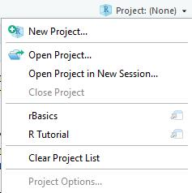

Datenvorbereitung
R für empirische Wissenschaften v1.0.2
Jan Philipp Nolte
Source:vignettes/02_Datenvorbereitung.Rmd
02_Datenvorbereitung.RmdEinführung
Die Methoden zur Datenvorbereitung zu lernen, ist der mit Abstand wichtigste und schwierigste Schritt auf dem Weg, R in der Praxis anwenden zu können. Deswegen ist dieser Teil auch der umfangreichste und mit einer interaktiven Übung am Ende versehen, an der Du Dein Wissen festigen kannst. Allerdings liegt in der Datenvorbereitung auch die größte Stärke im Vergleich zu Programmen wie SPSS. Bevor wir mit der Datenvorbereitung beginnen, müssen wir uns jedoch noch verschiedene Themen aneignen.
Projektorientierter Workflow
Projekte sind ein modernes Konzept, um R Scripte und Datensätze zu organisieren. Es gibt verschiedene Vorteile durch Projekte. Man kann zwischen Projekten innerhalb von R oben rechts einfach wechseln, der Ort von Datensätzen muss nicht mehr in Abhängigkeit vom eigenen Computer angepasst werden und Projekte sind aufgrund von in sich abgeschlossenen Umgebungen replizierbar. Aber wie erstellt man ein Projekt?
Oben rechts befindet sich ein Reiter namens
Project: (None). Klicke auf den Reiter und klicke aufNew Project.... In dem Reiter kann man auch schon bestehende Projekte sehen. Bei Klick auf die Projekte wird das Projekt sofort mit allen zuvor geöffneten R Scripten geöffnet. Ganz ohne suchen des Ordners auf Deinem Computer. Nun sehen wir drei Möglichkeiten. Wir entscheiden uns exemplarisch für
New Directory, was einen neuen Ordner mit einer Projektdatei erstellen wird.
- Bevor die Projektdatei erstellt wird, müsenn wir noch spezifizieren, welchen Projektyp wir haben möchten. Hier wählen wir
New Project.
Nun müssen wir noch den Namen des neuen Ordners festlegen und angeben, wo auf dem Computer der Ordner erstellt werden soll. In Zukunft kann der Ordner nach belieben verschoben werden. Das wichtige ist die nun in diesem Ordner enthaltene Projektdatei (
projektname.rproj).
Wenn Du nun das Package here lädst, findet das Package sofort den relativen Pfad zu Deiner Projektdatei heraus. Was bedeutet das? Egal wo sich der Ordner befindet (Desktop, Downloads Ordner oder tief verschachtel in Ordnerstrukturen), here findet den richtigen Weg. Zu wissen, wo sich das benutze R Script auf dem Computer befindet, ist kriegsentscheidend zum Einlesen des Datensatzes. Durch die Projektdatei braucht man also nie wieder das Working Directory per Hand mit setwd() festzulegen.
Der erste Schritt ist also immer das Erstellen eines R Projekts und das Laden des Packages am Anfang jedes neuen Scripts, mit dem man einen Datensatz einlesen möchte.
library(here)Aber wie kann man den Datensatz nun einlesen?
Import/Export
Auch wenn in diesem Tutorial die Datensätze bereits im Package enthalten sind, muss man in den meisten Fällen den Datensatz erst einmal einlesen. Datensätze können in verschiedenen Formaten vorliegen. Dies ist vor allem abhängig davon, mit welchen Programmen Unternehmen, Universitäten oder Kollegen arbeiten. Einige Beispiele sind:
- R (
.RData|.rda|.rds) - Excel (
.xlsx|.xls) - SPSS (
.sav) - Stata (
.dta) - Comma seperated values (
.csv) - Tab seperated values (
.tsv)
Einlesen eines Datensatzes
Eingelesen werden können sämtliche Dateientypen mithilfe von import() aus dem rio Package. Dabei erkennt die Funktion die Dateiendung und übernimmt hinter den Kulissen alles weitere. Damit der Datensatz als tibble (siehe Kapitel Extras) eingelesen wird, muss man setclass = "tbl" setzen. Für den Moment musst Du Dir beim setclass Argument noch nichts denken (aber trotzdem verwenden!).
library(rio)
import("test.xlsx", setclass = "tbl")Dabei muss sich das test.xlsx Excel Sheet innerhalb des selben Ordners wie die Projektdatei befinden. Der zweite Schritt ist also immer rio zu laden, da sonst die Funktionen nicht aufgerufen werden können.
Einlesen multipler Datensätze
Nicht selten kommt es vor, dass man nicht nur einen, sondern gleich mehrere Datensätze einlesen möchte. Dabei werden die verschiedenen Files in einer Liste (mehr zu Listen im Kapitel Extras) gespeichert. dir() (für directory) listet alle Files innerhalb eines Ordners auf. Der Pfeil wird später erklärt.
files <- dir(pattern = "csv$")Das pattern Argument ist optional. Man kann damit zum Beispiel die Dateiendung spezifizieren. Das Dollar-Zeichen am Ende stellt sicher, dass csv am Ende des Dateinamen steht. Zum Importieren verwenden wir hier import_list().
import_list(files, setclass = "tbl")Würden die Dateien in einem Unterordner data liegen, könnte man mit der Funktion here() aus dem gleichnamigen Package den Pfad dahin spezifizieren.
files <- dir(here("data"), pattern = "csv$")Sind die Datensätze im selben Format, kann man import_list() das Argument rbind geben, sodass alle Datensätze zeilenweise zusammengebunden werden.
import_list(here("data", files), setclass = "tbl", rbind = TRUE)import_list() funktioniert übrigens auch auch bei Excel Workbooks, die mehrere Excel Sheets beinhalten. Dabei wird jedes Sheet in einem Listenelement gespeichert. Für den Moment sind Listen für uns allerdings nicht weiter von Bedeutung.
Speichern
Auch das Speichern von Datensätzen könnte in R durch das rio Package intuitiver nicht sein. Anstelle von import() muss man lediglich export() benutzen. Das erste Argument der Funktion ist der Datensatzname, mit dem man innerhalb von R auf selbigen zugreift. Das zweite der gewünschte Dateienname.
export(datensatz, "test.xlsx")Zuweisungspfeil
Damit man den Datensatz auch speichert, muss man ihn einer Variable zuweisen. Dies macht man in R mit einem Zuweisungspfeil. Dabei wird die Variable in die lokale Environment gespeichert. Wichtig zu verstehen ist, dass in R nichts gespeichert wird, wenn man es nicht einer Variable zuweist.
Variablen kann man grundsätzlich fast so benennen wie man möchte. Man darf nur nicht mit einer Zahl anfangen oder nach einem Punkt direkt eine Zahl als Namen wählen wie bei .2VariablenName. Auf Umlaute sollte im Zusammenhang mit Programmiersprachen ebenfalls immer verzichtet werden. In diesem Fall ist der Variablenname tipp_wm.
tipp_wm <- import("tipp_wm.xlsx", setclass = "tbl")Auch bei anderen Befehlen, die wir später kennenlernen, ist der Zuweisungspfeil zentral, um Ergebnisse zu speichern und sie später wieder zu verwenden.
Der tidyverse Ansatz
Das tidyverse ist eine Zusammenstellung mehrerer Packages, die aufeinander abgestimmt sind. Gegenüber Base R macht es vieles im Kontext von Datenverarbeitung erheblich einfacher. Der Großteil der Aufgaben, die wir mithilfe von tidyverse Packages machen werden, kann man auch mit normalen Base R Funktionen ausführen. Allerdings kommt man mithilfe des tidyverse einfacher und schneller ans Ziel, mit dem Nebeneffekt einer nachvollziehbareren Syntax. Gerade wenn man sich Monate später den eigenen Code noch einmal ansieht, lernt man den Wert von Lesbarkeit zu schätzen. Zur Lesbarkeit trägt auch die angemessene Verwendung von Leerzeichen bei.
Der Hintergrund vom tidyverse ist es, tidy data zu kreieren. Man spricht von tidy data, wenn:
- Jede Variable eine Spalte ist
- Jede Beobachtung eine Zeile ist
- Jeder Wert in einer Zelle ist
Wir halten fest: Nach dem Starten von RStudio erstellen wir ein Projekt und laden erst einmal die drei wichtigsten Packages here, rio und tidyverse.
library(here)
library(rio)
library(tidyverse)Datentypen
Es gibt verschiedene Datentypen, die in den Spalten gespeichert werden. Die drei Hauptdatentypen, sind hier aufgelistet. In R werden sie etwas untypisch im Vergleich zu anderen Programmiersprachen benannt. In Klammern steht die jeweilige Abkürzung.
-
numeric(num / int / dbl): z.B. Alter, Gehalt
42## [1] 42-
character(chr): z.B. Herkunftsland, Allergien
"Hallo Welt"## [1] "Hallo Welt"-
logical(lgl): TRUE, FALSE
2 == 2## [1] TRUE1 < 2 & 1 == 2## [1] FALSE1 < 2 | 1 == 2## [1] TRUELogical Datentypen sind sicherlich erst einmal etwas seltsam für Programmiereinsteiger. Grundsätzlich kann eine logische Aussage immer nur TRUE oder FALSE zurückgeben. Ist ein Apfel gleich einer Banane? FALSE! Ist 1 kleiner als 2? TRUE! Bei logischen Abfragen ist es wichtig zu beachten, dass, wenn man auf Gleichheit von zwei Werten prüft, nicht ein einfaches =, sondern ein doppeltes == nötig ist. Man kann logische Aussagen auch kombinieren. Wenn beide logische Abfragen stimmen sollen, kann man ein & (UND) schreiben. Wenn nur einer Aussage richtig sein muss, damit der Wert TRUE zurückgegeben wird, muss man | (ODER) schreiben. Ungleichheit kann man mit != abfragen. Das Konzept logischer Datentypen ist sehr wichtig für uns, also merken und damit warm werden!
Datenvorbereitung
Wir erinnern uns, bei der Datenvorbereitung immer das tidyverse zu laden. Schauen wir uns zuerst einmal den ersten Datensatz an. Wer hat sich bei der Fußball Weltmeisterschafft 2018 in Russland nicht häufig über die Ergebnisse gewundert? Unseren 6 Personen in der Tipprunde in unserem Datensatz ging es nicht anders.
Drei der Urväter der zwei großen Strömungen der modernen Statistik haben sich aus dem Grabe erhoben, um noch einmal beim Tippen richtig abzuräumen. Reverant Thomas Bayes, Jerzy Neyman und Egon Pearson stellen sich dem Expertenwissen der drei Studenten Alice, Bob und Charlie.
Um den Datensatz ausgeben zu lassen, kannst Du einfach den Datensatznamen ausführen.
tipp_wm## # A tibble: 384 x 7
## Spieltag Person Tipp Ergebnis Tipp_Richtung Wahre_Richtung Art
## <dbl> <chr> <chr> <chr> <chr> <chr> <chr>
## 1 1 Thomas_B~ 2:0 5:0 S S Gruppen~
## 2 2 Thomas_B~ 1:3 0:1 N N Gruppen~
## 3 2 Thomas_B~ 0:0 0:1 U N Gruppen~
## 4 2 Thomas_B~ 1:2 3:3 N U Gruppen~
## 5 3 Thomas_B~ 2:1 2:1 S S Gruppen~
## 6 3 Thomas_B~ 3:0 1:1 S U Gruppen~
## 7 3 Thomas_B~ 0:2 0:1 N N Gruppen~
## 8 3 Thomas_B~ 4:0 2:0 S S Gruppen~
## 9 4 Thomas_B~ 2:1 0:1 S N Gruppen~
## 10 4 Thomas_B~ 3:0 0:1 S N Gruppen~
## # ... with 374 more rowsWir sehen sofort, es gibt 384 Zeilen und 7 Spalten. Es werden immer nur die ersten 10 Werte angezeigt.
- Spieltag: Nummer des Spieltags. An jedem Spieltag haben 1 bis 4 Spiele statt gefunden.
- Person: Die 6 verschiedenen Tipper
- Tipp: Der abgegebene Tipp für das jeweilige Spiel
- Ergebnis: Das tatsächliche Ergebnis
- Tipp_Richtung: Tipp, ob Sieg/Niederlage oder Unentschieden ausgehend von der Heimmannschaft
- Wahre_Richtung: Tatsächliche Richtung, ob Sieg/Niederlage oder Unentschieden ausgehend von der Heimmannschaft
- Art: Art des Spiels (Gruppenphase, Achtelfinale, etc.)
(Der Datensatz ist in der Form nicht tidy.)
Du wirst schnell sehen, wie sehr sich die Methoden des tidyverse am normalen Englisch orientieren. Wenn wir zum Beispiel nur auf die Tipps von Reverent Bayes schauen möchten, können wir mit filter() einen einfach Filter setzen. Dabei müssen wir nur die Spalte mit der Information über die Person auswählen und mit einem doppelten Gleichheitszeichen abfragen, ob diese Herrn Bayes entspricht.
tipp_wm %>%
filter(Person == "Thomas_Bayes")## # A tibble: 64 x 7
## Spieltag Person Tipp Ergebnis Tipp_Richtung Wahre_Richtung Art
## <dbl> <chr> <chr> <chr> <chr> <chr> <chr>
## 1 1 Thomas_B~ 2:0 5:0 S S Gruppen~
## 2 2 Thomas_B~ 1:3 0:1 N N Gruppen~
## 3 2 Thomas_B~ 0:0 0:1 U N Gruppen~
## 4 2 Thomas_B~ 1:2 3:3 N U Gruppen~
## 5 3 Thomas_B~ 2:1 2:1 S S Gruppen~
## 6 3 Thomas_B~ 3:0 1:1 S U Gruppen~
## 7 3 Thomas_B~ 0:2 0:1 N N Gruppen~
## 8 3 Thomas_B~ 4:0 2:0 S S Gruppen~
## 9 4 Thomas_B~ 2:1 0:1 S N Gruppen~
## 10 4 Thomas_B~ 3:0 0:1 S N Gruppen~
## # ... with 54 more rowsWir sehen, dass nur noch 64 Spalten enthalten sind. So weit so gut, aber was ist dieses kryptische “Prozent, größer als, Prozent” ( %>% )? Was erst einmal nach Hacken ala Mr. Robot aussieht, bindet ganz einfach nur zwei Code Zeilen aneinander. Wir werden gleich sehen, worin der große Vorteil davon besteht. Man bezeichnet diese Zeichnenkombination als Pipe. Am Anfang jeder Pipe steht immer der Name des Datensatz. In unserem Fall tipp_wm. Ab hier weiß R für alle mit der Pipe verbunden Funktionen, welcher Datensatz gemeint ist. Deswegen müssen wir filter() auch nicht noch einmal extra mitteilen, in welchen Datensatz nach der Spalte Person gesucht werden soll.
Um dieses Monster zu erschaffen, muss man allerdings nicht immer % und > und % einzelnd eingeben sondern kann einfach crtl + shift + M auf Windows oder cmd + shift + M auf Mac schreiben. Shortcuts sind des Programmierers bester Freund.
Schauen wir uns direkt das nächste Beispiel an. Wollen wir nun die häufige Aufgabe ausführen, eine neue Spalte zu erstellen, können wir dies mit mutate() machen. Auch hier kann man sich den Befehl gut mit der deutschen Übersetzung des Wortes als etwas verändern, merken. Wie immer steht der Datensatzname ganz oben noch vor der ersten Pipe. Wie für alle kommenden Funktionen zur Datenmanipulation muss auch hier der Datensatzname nicht extra innerhalb von mutate() aufgerufen werden. Das geschieht alles hinter den Kulissen. In diesem Beispiel nehmen wir willkürlich die Spieltag Spalte und addieren Zeilenweise eine 1 hinzu (würde uns in der Praxis natürlich nichts bringen) und nennen diese neue Spalte kreativer Weise Neue_Spalte. Der Name vor dem Gleichheitszeichen ist immer der Name der neuen Spalte.
tipp_wm %>%
mutate(Neue_Spalte = Spieltag + 1)## # A tibble: 384 x 8
## Spieltag Person Tipp Ergebnis Tipp_Richtung Wahre_Richtung Art
## <dbl> <chr> <chr> <chr> <chr> <chr> <chr>
## 1 1 Thoma~ 2:0 5:0 S S Grup~
## 2 2 Thoma~ 1:3 0:1 N N Grup~
## 3 2 Thoma~ 0:0 0:1 U N Grup~
## 4 2 Thoma~ 1:2 3:3 N U Grup~
## 5 3 Thoma~ 2:1 2:1 S S Grup~
## 6 3 Thoma~ 3:0 1:1 S U Grup~
## 7 3 Thoma~ 0:2 0:1 N N Grup~
## 8 3 Thoma~ 4:0 2:0 S S Grup~
## 9 4 Thoma~ 2:1 0:1 S N Grup~
## 10 4 Thoma~ 3:0 0:1 S N Grup~
## # ... with 374 more rows, and 1 more variable: Neue_Spalte <dbl>Möchten wir nun bestimmte Spalten auswählen, können wir das einfach mit select() machen. Erneut nach genau dem selben Schema. Hier wählen wir die Spalten Spieltag, Person und Ergebnis aus. Man kann an dieser Stelle auch Spalten umbenennen, indem man den neuen Namen einfach vor den Spaltennamen schreibt. Wir machen exemplarisch aus Person einfach mal Tipper.
tipp_wm %>%
select(Spieltag, Tipper = Person, Ergebnis)## # A tibble: 384 x 3
## Spieltag Tipper Ergebnis
## <dbl> <chr> <chr>
## 1 1 Thomas_Bayes 5:0
## 2 2 Thomas_Bayes 0:1
## 3 2 Thomas_Bayes 0:1
## 4 2 Thomas_Bayes 3:3
## 5 3 Thomas_Bayes 2:1
## 6 3 Thomas_Bayes 1:1
## 7 3 Thomas_Bayes 0:1
## 8 3 Thomas_Bayes 2:0
## 9 4 Thomas_Bayes 0:1
## 10 4 Thomas_Bayes 0:1
## # ... with 374 more rowsManchmal möchte man aber Spalten umbennen und alle Spalten im Datensatz behalten. Wir erinnern uns, select() wählt nur die explizit genannten aus. Eine Lösung bietet rename() mit genau der gleichen Syntax, nur werden hier alle weiteren Spalten behalten.
tipp_wm %>%
rename(Tipper = Person)## # A tibble: 384 x 7
## Spieltag Tipper Tipp Ergebnis Tipp_Richtung Wahre_Richtung Art
## <dbl> <chr> <chr> <chr> <chr> <chr> <chr>
## 1 1 Thomas_B~ 2:0 5:0 S S Gruppen~
## 2 2 Thomas_B~ 1:3 0:1 N N Gruppen~
## 3 2 Thomas_B~ 0:0 0:1 U N Gruppen~
## 4 2 Thomas_B~ 1:2 3:3 N U Gruppen~
## 5 3 Thomas_B~ 2:1 2:1 S S Gruppen~
## 6 3 Thomas_B~ 3:0 1:1 S U Gruppen~
## 7 3 Thomas_B~ 0:2 0:1 N N Gruppen~
## 8 3 Thomas_B~ 4:0 2:0 S S Gruppen~
## 9 4 Thomas_B~ 2:1 0:1 S N Gruppen~
## 10 4 Thomas_B~ 3:0 0:1 S N Gruppen~
## # ... with 374 more rowsSo weit so gut. Aber wozu brauchen wir nun diese kryptische Pipe? Es ist äußerst selten, dass man nur einen Befehl auf einmal anwenden möchte. Wenn wir zum Beispiel die drei gelernten Funktionen innerhalb eines Befehls kombinieren möchten, können wir diese einfach mit einer Pipe verbinden. Wir erstellen also zuerst eine neue Spalte, filtern alle Einträge von Bob heraus und schauen uns dann nur die drei Spalten Person, Ergebnis und Neue_Spalte an.
tipp_wm %>%
mutate(Neue_Spalte = Spieltag + 1) %>%
filter(Person == "Bob") %>%
select(Person, Ergebnis, Neue_Spalte)## # A tibble: 64 x 3
## Person Ergebnis Neue_Spalte
## <chr> <chr> <dbl>
## 1 Bob 5:0 2
## 2 Bob 0:1 3
## 3 Bob 0:1 3
## 4 Bob 3:3 3
## 5 Bob 2:1 4
## 6 Bob 1:1 4
## 7 Bob 0:1 4
## 8 Bob 2:0 4
## 9 Bob 0:1 5
## 10 Bob 0:1 5
## # ... with 54 more rowsDie Reihenfolge der Funktionsaufrufe spielt dabei eine entscheidene Rolle. Hätten wir zuerst nur die Spalten Ergebnis und Neue_Spalte ausgewählt, hätten wir anschließend nicht mehr nach Bob suchen können, da die Spalte Person gar nicht mehr im Datensatz enthalten wäre (siehe das select() Beispiel oben). Außerdem wäre die Neue_Spalte noch gar nicht existent.
Es gibt noch mehr nützliche Funktionen – alle nach dem selben Prinzip. Möchten wir die Variablen gruppieren, um für jede der Gruppen eine bestimmte Funktion anzuwenden, verwenden wir group_by(). Beispielhaft zählen wir die Anzahl der Einträge jeder Person mit count(). Um die Reihenfolge der Personen in absteigender Reihenfolge des Alphabets anzuzeigen, können wir innerhalb von arrange() die desc() (descending, engl. absteigend) Funktion verwenden.
tipp_wm %>%
group_by(Person) %>%
count() %>%
arrange(desc(Person))## # A tibble: 6 x 2
## # Groups: Person [6]
## Person n
## <chr> <int>
## 1 Thomas_Bayes 64
## 2 Jerzy_Neyman 64
## 3 Egon_Pearson 64
## 4 Charlie 64
## 5 Bob 64
## 6 Alice 64Hier hat jede Person gleich viele Tipps abgegeben. Zumindest befinden sich gleich viele Zeilen für jede Person im Datensatz. Aufschluss über die Anzahl der NAs kriegen wir erst später (siehe Kapitel Deskriptive Statistik).
Bei ANOVAs braucht man Kategorien, nach denen man die abhängige Variable untersuchen kann. Was wäre, wenn wir untersuchen möchten, ob sich die erreichten Punktzahlen – also die Qualität der Tipps – zwischen Gruppenphase und KO-Phase verändert haben? In der Spalte Art gibt es allerdings die Ausprägungen Gruppenphase, Achtelfinale, Viertelfinale, Halbfinale und Finale. Alle Finalarten fallen in die Kategorie KO-Phase. Was wir brauchen, ist also eine neue Spalte, die immer wenn Gruppenphase in der Spalte Art steht, Gruppe beinhaltet und ansonsten KO. Erreichen können wir dies mit dem if_else() (engl. für wenn_ansonsten) Befehl. Als erstes Argument muss der Funktion die Bedingung gegeben werden, die erfüllt werden soll. Diese muss immer einen logischen Datentyp zurückgeben – also wahr oder falsch (TRUE, FALSE). Das zweite Argument ist das, was passieren soll, wenn die Bedingungen zutrifft. Das dritte Argument kümmert sich um alle sonstigen Fälle. Also wenn in der Spalte Art die Gruppenphase steht, trage Gruppe ein, ansonsten KO. Wir nennen diese neue Spalte Phase.
tipp_wm %>%
mutate(Phase = if_else(Art == "Gruppenphase", "Gruppe", "KO"))## # A tibble: 384 x 8
## Spieltag Person Tipp Ergebnis Tipp_Richtung Wahre_Richtung Art Phase
## <dbl> <chr> <chr> <chr> <chr> <chr> <chr> <chr>
## 1 1 Thoma~ 2:0 5:0 S S Grup~ Grup~
## 2 2 Thoma~ 1:3 0:1 N N Grup~ Grup~
## 3 2 Thoma~ 0:0 0:1 U N Grup~ Grup~
## 4 2 Thoma~ 1:2 3:3 N U Grup~ Grup~
## 5 3 Thoma~ 2:1 2:1 S S Grup~ Grup~
## 6 3 Thoma~ 3:0 1:1 S U Grup~ Grup~
## 7 3 Thoma~ 0:2 0:1 N N Grup~ Grup~
## 8 3 Thoma~ 4:0 2:0 S S Grup~ Grup~
## 9 4 Thoma~ 2:1 0:1 S N Grup~ Grup~
## 10 4 Thoma~ 3:0 0:1 S N Grup~ Grup~
## # ... with 374 more rowsFür Regressionsanalysen brauchen wir hingegen Dummy Variablen. Diese können wir auf genau dieselbe Art und Weise erstellen. Wenn die Phase gleich der Gruppenphase ist, schreibe eine 1, ansonsten eine 0. Das gleiche Prinzip gilt für die Dummy Variable von KO.
tipp_wm %>%
mutate(Gruppe = if_else(Phase == "Gruppe", 1, 0),
KO = if_else(Phase == "KO", 1, 0))## # A tibble: 384 x 10
## Spieltag Person Tipp Ergebnis Tipp_Richtung Wahre_Richtung Art Phase
## <dbl> <chr> <chr> <chr> <chr> <chr> <chr> <chr>
## 1 1 Thoma~ 2:0 5:0 S S Grup~ Grup~
## 2 2 Thoma~ 1:3 0:1 N N Grup~ Grup~
## 3 2 Thoma~ 0:0 0:1 U N Grup~ Grup~
## 4 2 Thoma~ 1:2 3:3 N U Grup~ Grup~
## 5 3 Thoma~ 2:1 2:1 S S Grup~ Grup~
## 6 3 Thoma~ 3:0 1:1 S U Grup~ Grup~
## 7 3 Thoma~ 0:2 0:1 N N Grup~ Grup~
## 8 3 Thoma~ 4:0 2:0 S S Grup~ Grup~
## 9 4 Thoma~ 2:1 0:1 S N Grup~ Grup~
## 10 4 Thoma~ 3:0 0:1 S N Grup~ Grup~
## # ... with 374 more rows, and 2 more variables: Gruppe <dbl>, KO <dbl>Eine if_else Verzweigung kann immer nur 2 Fälle abgedecken. Wenn die Bedingung wahr oder eben falsch ist. Was, wenn es mehr Fälle gibt? Angenommen, wir möchten eine Spalte mit der Punktezahl pro Spiel erstellen. Bepunkten wollen wir es in traditioneller Manier mit 3 Punkten für einen komplett richtigen Tipp, 1 Punkt für die richtige Richtung (Sieg/Niederlage/Unentschieden) und keine Punkte, wenn weder noch erraten wurde. Das sind drei Fälle. Deswegen benötigen wir nun case_when(). Hier können beliebig viele Bedingungen abgefragt werden. Dabei steht die logische Bedingung wieder an erster Stelle. Was bei der Wahrheit der Bedingung geschehen soll, steht hinter der Tilde ~. Wenn der Tipp gleich dem Ergebnis ist, gibt es drei Punkte usw. Die letzte Zeile des Befehls sieht etwas komisch aus. Dabei funktioniert das TRUE wie das else im if_else Befehl. Es deckt alle sonstigen Fälle ab.
tipp_wm %>%
mutate(Punkte = case_when(Tipp == Ergebnis ~ 3,
Tipp_Richtung == Wahre_Richtung ~ 1,
TRUE ~ 0))## # A tibble: 384 x 9
## Spieltag Person Tipp Ergebnis Tipp_Richtung Wahre_Richtung Art Phase
## <dbl> <chr> <chr> <chr> <chr> <chr> <chr> <chr>
## 1 1 Thoma~ 2:0 5:0 S S Grup~ Grup~
## 2 2 Thoma~ 1:3 0:1 N N Grup~ Grup~
## 3 2 Thoma~ 0:0 0:1 U N Grup~ Grup~
## 4 2 Thoma~ 1:2 3:3 N U Grup~ Grup~
## 5 3 Thoma~ 2:1 2:1 S S Grup~ Grup~
## 6 3 Thoma~ 3:0 1:1 S U Grup~ Grup~
## 7 3 Thoma~ 0:2 0:1 N N Grup~ Grup~
## 8 3 Thoma~ 4:0 2:0 S S Grup~ Grup~
## 9 4 Thoma~ 2:1 0:1 S N Grup~ Grup~
## 10 4 Thoma~ 3:0 0:1 S N Grup~ Grup~
## # ... with 374 more rows, and 1 more variable: Punkte <dbl>Es ist Dir sicher aufgefallen, dass wir bisher noch nie den bereits erwähnten Zuweisungspfeil <- verwendet haben. Das heißt, dass unsere Rechnungen in Schall und Rauch aus Einsen und Nullen verschwunden sind. Möchten wir die Ergebnisse der Pipe speichern, müsse wir die Ergebnisse einer Variable zuordnen. Wenn wir lediglich Spalten dran gehängt haben, macht es durchaus Sinn, dabei den selben Datensatznamen zu verwenden. Ansonsten ist ein anderer, aussagekräftiger Name zu empfehlen wie tipp_wm_bayes falls zum Beispiel nach allen Tipps von Thomas Bayes gefiltert wurde.
tipp_wm <- tipp_wm %>%
mutate(Punkte = case_when(Tipp == Ergebnis ~ 3,
Tipp_Richtung == Wahre_Richtung ~ 1,
TRUE ~ 0))Wollen wir Spalten logarithmieren oder standardisieren, können wir dies mit log() respektive scale() machen. Zur Illustration behalten wir nur die Spalten der Spieltage.
tipp_wm %>%
mutate(Spieltag_lg = log(Spieltag),
Spieltag_z = scale(Spieltag)) %>%
select(Spieltag, Spieltag_lg, Spieltag_z)## # A tibble: 384 x 3
## Spieltag Spieltag_lg Spieltag_z
## <dbl> <dbl> <dbl>
## 1 1 0 -1.68
## 2 2 0.693 -1.52
## 3 2 0.693 -1.52
## 4 2 0.693 -1.52
## 5 3 1.10 -1.35
## 6 3 1.10 -1.35
## 7 3 1.10 -1.35
## 8 3 1.10 -1.35
## 9 4 1.39 -1.19
## 10 4 1.39 -1.19
## # ... with 374 more rowsMit mutate_at() erhält man die Möglichkeit eine Funktion wie log() gleich auf mehrere Spalten anzuwenden. Dabei müssen die Spalten im vars() Argument verpackt werden.
tipp_wm %>%
mutate_at(vars(Spieltag, Punkte), log)## # A tibble: 384 x 9
## Spieltag Person Tipp Ergebnis Tipp_Richtung Wahre_Richtung Art Phase
## <dbl> <chr> <chr> <chr> <chr> <chr> <chr> <chr>
## 1 0 Thoma~ 2:0 5:0 S S Grup~ Grup~
## 2 0.693 Thoma~ 1:3 0:1 N N Grup~ Grup~
## 3 0.693 Thoma~ 0:0 0:1 U N Grup~ Grup~
## 4 0.693 Thoma~ 1:2 3:3 N U Grup~ Grup~
## 5 1.10 Thoma~ 2:1 2:1 S S Grup~ Grup~
## 6 1.10 Thoma~ 3:0 1:1 S U Grup~ Grup~
## 7 1.10 Thoma~ 0:2 0:1 N N Grup~ Grup~
## 8 1.10 Thoma~ 4:0 2:0 S S Grup~ Grup~
## 9 1.39 Thoma~ 2:1 0:1 S N Grup~ Grup~
## 10 1.39 Thoma~ 3:0 0:1 S N Grup~ Grup~
## # ... with 374 more rows, and 1 more variable: Punkte <dbl>Ein paar wichtige Konzepte fehlen uns noch. Dafür schauen wir uns einen neuen Datensatz namens big_five an. Der Datensatz beinhaltet soziodemographische Daten wie Alter, Geschlecht und Herkunft sowie Spalten für die durchschnittliche Ausprägung von Extraversion, Neurotizismus, Verträglichkeit und Gewissenhaftigkeit. Für den fünften Persönlichkeitsfaktor Offenheit wurde noch kein durchschnittlicher Wert berechnet. Es gibt 10 Items O1 bis O10, die die Dimension der Offenheit abgefragt haben.
big_five## # A tibble: 200 x 17
## Alter Geschlecht Herkunft Extraversion Neurotizismus Vertraeglichkeit
## <dbl> <chr> <chr> <dbl> <dbl> <dbl>
## 1 36 m DE 3 1.9 3.4
## 2 30 f US 3.1 3.4 3.1
## 3 23 m US 3.4 2.4 3.6
## 4 54 m US 3.3 4.2 3.6
## 5 24 f US 3 2.8 3
## 6 14 f US 2.8 3.5 3.2
## 7 32 m HK 3.5 3.1 4.2
## 8 20 m IN 3.5 2.6 3.5
## 9 29 f IN 3 3.7 3.2
## 10 17 m US 3.1 3.6 3
## # ... with 190 more rows, and 11 more variables: Gewissenhaftigkeit <dbl>,
## # O1 <dbl>, O2 <dbl>, O3 <dbl>, O4 <dbl>, O5 <dbl>, O6 <dbl>, O7 <dbl>,
## # O8 <dbl>, O9 <dbl>, O10 <dbl>Somit stoßen wir auch schon auf eine sehr häufige Problemstellung. Das Berechnen von Mittelwerten oder Summen über mehrer Spalten pro Person (also zeilenweise). Dafür wählen wir uns zuerst die interessierenden Spalten wie gewohnt mit select() aus. Wenn die Spalten nebeneinander liegen, kann man auch einfach einen Doppelpunkt benutzen.
vars <- big_five %>%
select(O1:O10)Der Doppelpunkt liest sich hier zum Beispiel als O1 bis O10. Erst einmal ausgewählt, ist der Rest schnell erledigt. Wir erstellen mit mutate() eine neue Spalte namens Offenheit und erhalten mit rowMeans() die Mittelwerte pro Zeile (row), also pro Person. Es gibt eine äquivalente Funktion rowSums() zum Summieren. Anschließend möchten wir die einzelnen Items nicht im Datensatz, sondern nur die soziodemographischen Daten und die fünf Dimensionen der Persönlichkeitsfaktoren behalten.
big_five %>%
mutate(Offenheit = rowMeans(vars)) %>%
select(Alter:Gewissenhaftigkeit, Offenheit)## # A tibble: 200 x 8
## Alter Geschlecht Herkunft Extraversion Neurotizismus Vertraeglichkeit
## <dbl> <chr> <chr> <dbl> <dbl> <dbl>
## 1 36 m DE 3 1.9 3.4
## 2 30 f US 3.1 3.4 3.1
## 3 23 m US 3.4 2.4 3.6
## 4 54 m US 3.3 4.2 3.6
## 5 24 f US 3 2.8 3
## 6 14 f US 2.8 3.5 3.2
## 7 32 m HK 3.5 3.1 4.2
## 8 20 m IN 3.5 2.6 3.5
## 9 29 f IN 3 3.7 3.2
## 10 17 m US 3.1 3.6 3
## # ... with 190 more rows, and 2 more variables: Gewissenhaftigkeit <dbl>,
## # Offenheit <dbl>Die Reihenfolge der in select() ausgewählten Spalten entscheidet übrigens über die Reihenfolge der Spalten. Alternativ zum Auswählen der Spalten, die man behalten möchte, kann man auch einfach die ungewünschten Spalten O1 bis O10 entfernen.
big_five %>%
mutate(Offenheit = rowMeans(vars)) %>%
select(-(O1:O10))Beachte die Klammern um O1:O10. Was ist eigentlich, wenn man nur Spalten mit Zahlen im Datensatz behalten möchte? Mit select_if() ist eine speziell auf solche Aufgaben zugeschnittene Funktion verfügbar. Wenn die Spalte numerisch ist (is.numeric), wird sie behalten.
big_five %>%
select_if(is.numeric)## # A tibble: 200 x 15
## Alter Extraversion Neurotizismus Vertraeglichkeit Gewissenhaftigk~ O1
## <dbl> <dbl> <dbl> <dbl> <dbl> <dbl>
## 1 36 3 1.9 3.4 3.3 5
## 2 30 3.1 3.4 3.1 2.7 5
## 3 23 3.4 2.4 3.6 3 3
## 4 54 3.3 4.2 3.6 3 2
## 5 24 3 2.8 3 3.3 5
## 6 14 2.8 3.5 3.2 3.3 5
## 7 32 3.5 3.1 4.2 3 3
## 8 20 3.5 2.6 3.5 2.7 2
## 9 29 3 3.7 3.2 2.9 4
## 10 17 3.1 3.6 3 2.9 4
## # ... with 190 more rows, and 9 more variables: O2 <dbl>, O3 <dbl>,
## # O4 <dbl>, O5 <dbl>, O6 <dbl>, O7 <dbl>, O8 <dbl>, O9 <dbl>, O10 <dbl>Ein weiterer praktischer Sonderfall ist select_at(). Die Funktionsweise ist die selbe wie bei mutate_at(). Der Vorteil ist die Integration von starts_with() und ends_with() womit man, wie der Name bereits suggeriert, Anfangs- respektive Endbuchstaben oder ganze Wörter auswählen kann. Es werden also nur die Spalten behalten, die mit der Zeichenkombination starten oder enden. Hier erhalten wir alle Spalten mit dem Anfangsbuchstaben E. Also hier nur Extraversion.
big_five %>%
select_at(vars(starts_with("E")))## # A tibble: 200 x 1
## Extraversion
## <dbl>
## 1 3
## 2 3.1
## 3 3.4
## 4 3.3
## 5 3
## 6 2.8
## 7 3.5
## 8 3.5
## 9 3
## 10 3.1
## # ... with 190 more rowsBreites vs. langes Datenformat
Das lange Datenformat ist eins der wichtigsten Konzepte. Man benötigt es für jeden Graphen und für manche induktiven Verfahren. Man erhält im Großteil der Fälle beim Erheben Daten im breiten Format. Um das besser zu veranschaulichen schauen wir uns einmal an, wie unsere Tipps zur WM in breitem Format aussehen würden.
tipp_wm_wide## # A tibble: 64 x 7
## Thomas_Bayes Egon_Pearson Jerzy_Neyman Alice Bob Charlie Ergebnis
## <chr> <chr> <chr> <chr> <chr> <chr> <chr>
## 1 2:0 1:0 2:1 2:1 3:1 2:1 5:0
## 2 1:3 0:0 0:2 1:2 0:2 0:2 0:1
## 3 0:0 0:2 1:1 1:1 2:1 1:1 0:1
## 4 1:2 1:1 2:1 2:4 2:2 1:0 3:3
## 5 2:1 <NA> 2:0 2:1 2:0 2:1 2:1
## 6 3:0 <NA> 3:1 2:1 2:1 4:0 1:1
## 7 0:2 1:2 0:2 1:2 2:1 1:2 0:1
## 8 4:0 1:2 3:0 1:0 3:0 4:0 2:0
## 9 2:1 0:0 1:1 1:1 0:1 1:0 0:1
## 10 3:0 1:0 2:0 3:1 3:1 2:0 0:1
## # ... with 54 more rowsIn jeder Spalte sind hier die Tipps der jeweiligen Person. Was bedeutet es nun, diesen Datensatz lang zu machen?
tipp_wm_wide %>%
gather(Person, Tipp, Thomas_Bayes:Charlie)## # A tibble: 384 x 3
## Ergebnis Person Tipp
## <chr> <chr> <chr>
## 1 5:0 Thomas_Bayes 2:0
## 2 0:1 Thomas_Bayes 1:3
## 3 0:1 Thomas_Bayes 0:0
## 4 3:3 Thomas_Bayes 1:2
## 5 2:1 Thomas_Bayes 2:1
## 6 1:1 Thomas_Bayes 3:0
## 7 0:1 Thomas_Bayes 0:2
## 8 2:0 Thomas_Bayes 4:0
## 9 0:1 Thomas_Bayes 2:1
## 10 0:1 Thomas_Bayes 3:0
## # ... with 374 more rowsWie man sieht, werden nun alle Ergebnisse, Personen und Tipps jeweils in eine Spalte geschrieben. Wir erreichen dies mit gather(). Das erste Arugment ist der Name der neuen Spalten, die die Werte der Spaltennamen enthält. Also hier die Personen. Das zweite Argument beschreibt die Werte innerhalb der Spalten, die wir hier als Tipp bezeichnen. Das dritte Argument sind nun die Spalten, die zusammen gesammelt werden sollen. Wir wollen alle Personen – also von Thomas Bayes bis Charlie – in der Spalte Person haben. Weshalb wir das brauchen, wird in den folgenden Kapiteln noch klarer. Das Prinzip hinter gather() ist etwas abstrakt und verlangt am Anfang erst einmal Gewöhnung. Wenn man sich nicht sicher ist, welcher Name nun wozu gehört kann man gut und gerne auch erst einmal sowas wie
tipp_wm_wide %>%
gather(test, test1, Thomas_Bayes:Charlie)## # A tibble: 384 x 3
## Ergebnis test test1
## <chr> <chr> <chr>
## 1 5:0 Thomas_Bayes 2:0
## 2 0:1 Thomas_Bayes 1:3
## 3 0:1 Thomas_Bayes 0:0
## 4 3:3 Thomas_Bayes 1:2
## 5 2:1 Thomas_Bayes 2:1
## 6 1:1 Thomas_Bayes 3:0
## 7 0:1 Thomas_Bayes 0:2
## 8 2:0 Thomas_Bayes 4:0
## 9 0:1 Thomas_Bayes 2:1
## 10 0:1 Thomas_Bayes 3:0
## # ... with 374 more rowsschreiben und test und test1 anschließend in passende Spaltennamen ändern. Das Gegenstück zu gather() ist spread(), allerdings ist die Funktion kein perfekter Gegenspieler. Häufiger treten Fehler auf. Gut für uns, dass es praktisch nicht vorkommt, lange Formate breit machen zu wollen.
Den größten Teil hast du nun bereits hinter Dir. Bevor Du dich jedoch euphorisch auf die Übungsaufgaben stürzst, noch ein paare Worte zu Fehler- und Warnmeldungen.
Fehler- und Warnmeldungen
Es gibt einen großen Unterschied zwischen Fehler- und Warnmeldungen. Wie der Name bereits suggeriert, stoppen Fehlermeldungen den Code, während Warnmeldungen ein Ergebnis zurückgeben und nur auf eine Ungereimtheit hinweisen. Es ist also sehr wichtig, die roten Meldungen in der Konsole genau zu lesen. Wichtig ist, beim roten Text nicht gleich in Panik zu geraten, sondern entspannt die Meldung durchzulesen und falls man nicht weiter weiß, die Meldung zu googeln.
Übungen
Nun geht’s an die Übung. Kopiere den R Befehl in Deine Konsole und es startet sich ein interaktives Tutorial in Deinem Standardbrowser.
learnr::run_tutorial("wiederholung", package = "rBasics")Der interaktive Übungssatz beinhaltet verschiedene Übungen, die das Verständnis des Gelernten prüfen sollen. Dabei kann man sich Hinweise holen, wenn man nicht weiterkommt. Bei Multiple Choice Fragen wird sofort geprüft, ob die Antwort korrekt ist. Um zu erfahren, ob der geschrieben Code richtig ist, kann man mehrmals auf Hints drücken, da der letzte Hinweis immer die Lösung beinhaltet. Der Fortschritt wird automatisch auf Deinem Computer gespeichert, sodass Du zu einem späteren Zeitpunkt die Übungen fortführen kannst. Viel Erfolg und vor allem viel Spaß!